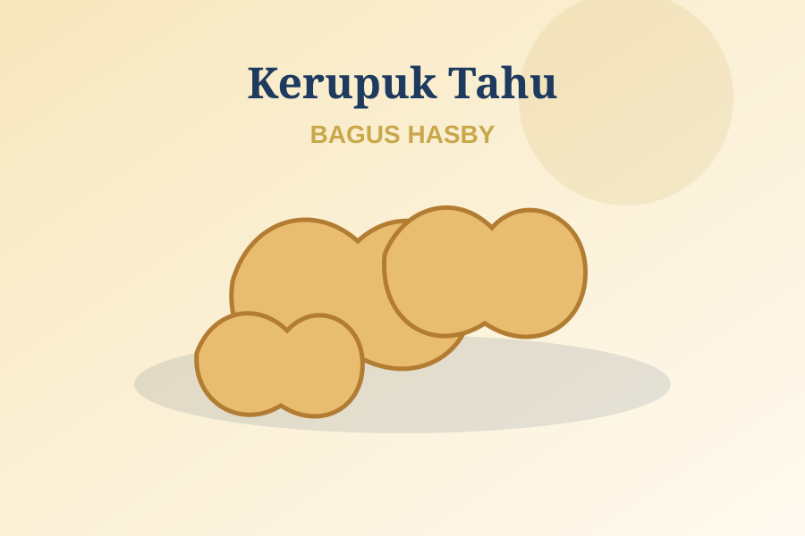
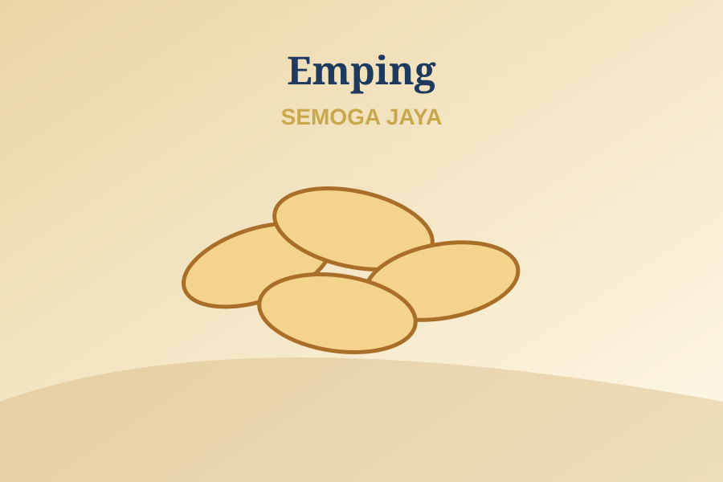
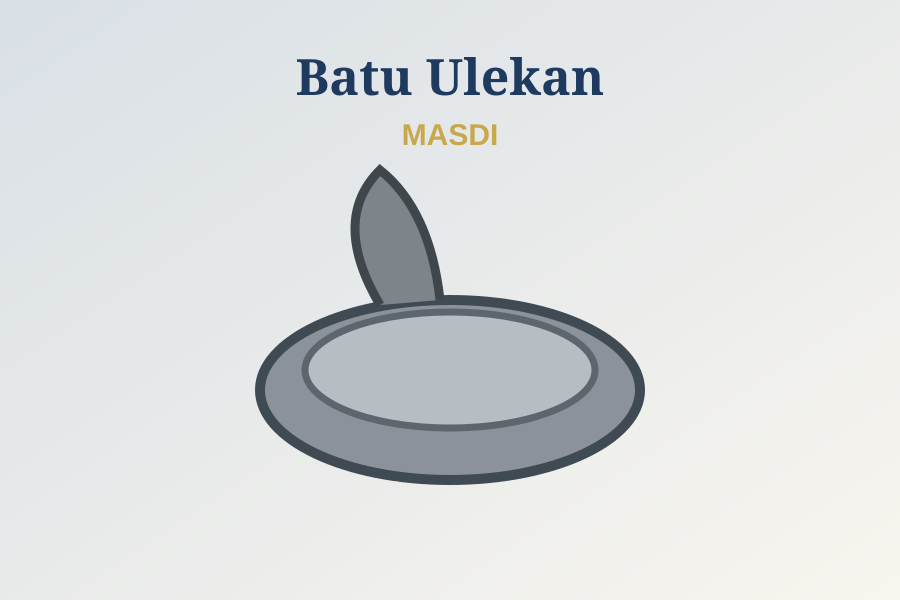
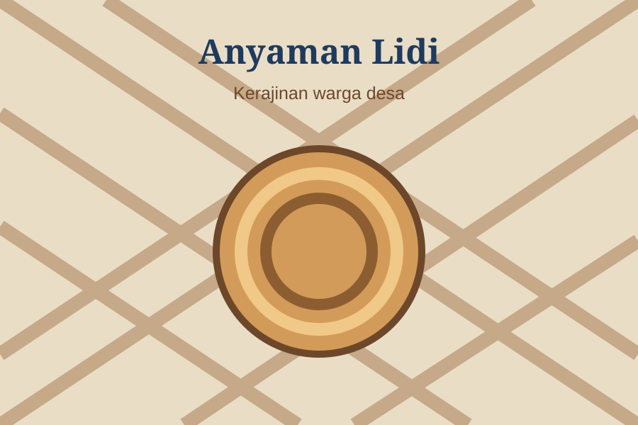
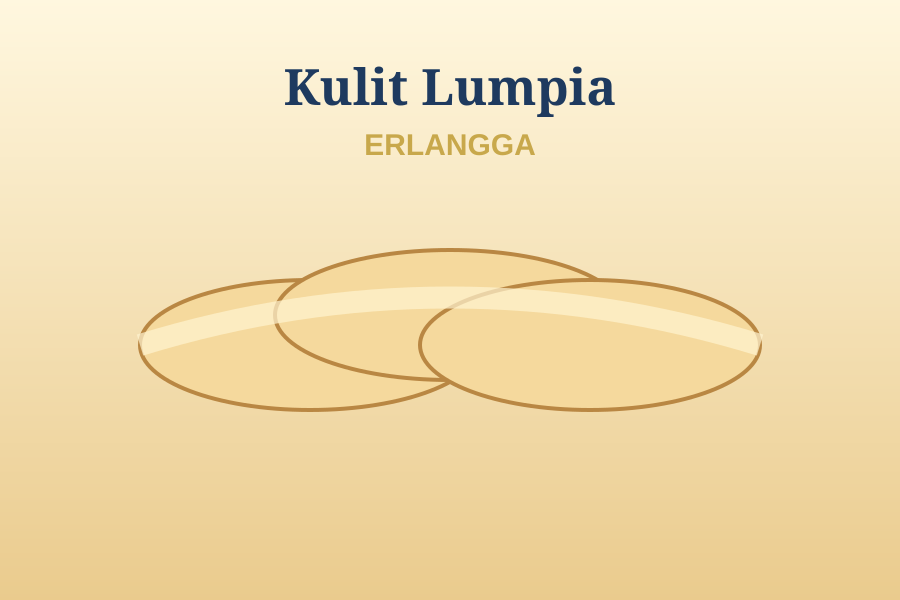

Kenali produk dan usaha lokal masyarakat Desa Buah Berak. Klik kartu UMKM untuk langsung menghubungi penjual melalui WhatsApp.

01Kerupuk tahu khas UMKM Desa Buah Berak.
Hubungi Penjual via WhatsApp →
02Produk emping melinjo dari pelaku usaha lokal.
Hubungi Penjual via WhatsApp →
03Peralatan dapur berbahan batu untuk kebutuhan rumah tangga.
Hubungi Penjual via WhatsApp →
04Kerajinan anyaman berbahan lidi karya masyarakat desa.
Hubungi Penjual via WhatsApp →
05Kulit lumpia untuk kebutuhan rumah tangga dan usaha kuliner.
Hubungi Penjual via WhatsApp →Nomor WhatsApp penjual dapat diisi admin desa pada atribut data-wa setiap kartu. Format nomor: 628xxxxxxxxxx, tanpa tanda + atau spasi.